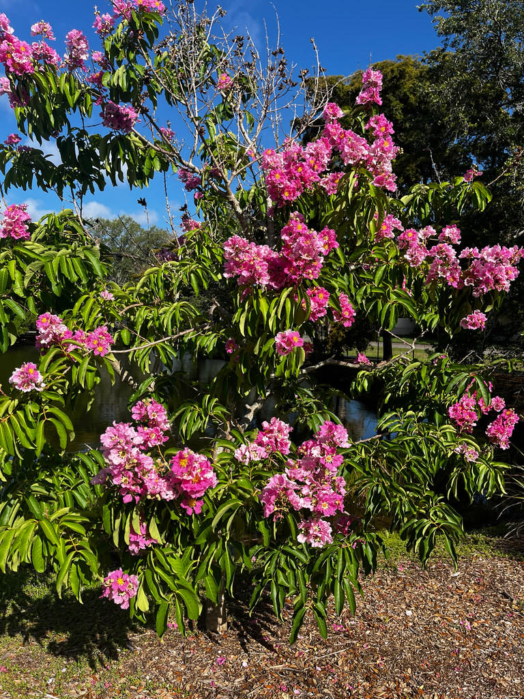

Explore the gardens
Get to know the plants and wildlife that make their home here. Follow a sign, or simply take a look around.
Plants & wildlife →A community garden in Bradenton
Explore the gardens, look for wildlife, take a photo or follow a sign. There’s always something to discover.
Ten acres of subtropical garden, free and open to everyone.
Hours & contact
Get to know the plants and wildlife that make their home here. Follow a sign, or simply take a look around.
Plants & wildlife →Classes, music, events and workdays bring neighbors together in the garden.
What’s happening →Volunteers and community support help keep the park growing and open to everyone.
Get involved →Rooted in the community
Local citizens and community groups came together in 1990 to save the former Manatee County Nursery as green space. The park has been growing ever since.
Manatee County owns the land. The Palma Sola Botanical Park Foundation runs the collections, programming, events and volunteers that make the park worth visiting.